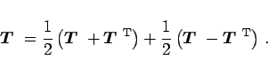
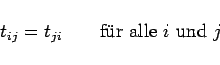
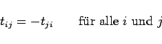

Inhalt Index DeskTop Bronstein

 Lineare Algebra Tensoren Tensoren mit speziellen Eigenschaften Tensoren 2. Stufe
Lineare Algebra Tensoren Tensoren mit speziellen Eigenschaften Tensoren 2. Stufe


Für Tensoren 2. Stufe gelten dieselben Rechenregeln wie für Matrizen. Insbesondere läßt sich jeder Tensor T als Summe eines symmetrischen und eines schiefsymmetrischen Tensors darstellen:
|  | (4.76a) |
Ein Tensor T =(tij) heißt symmetrisch, wenn
|  | (4.76b) |
gilt. Im Falle
|  | (4.76c) |
heißt er schief- oder antisymmetrisch. Dabei ist zu beachten, daß bei einem antisymmetrischen Tensor die Elemente t11, t22 und t33 Null sind. Der Begriff der Symmetrie und Antisymmetrie läßt sich auch auf Tensoren höherer Stufe übertragen, wenn man diese Begriffe auf bestimmte Paare von Indizes bezieht.